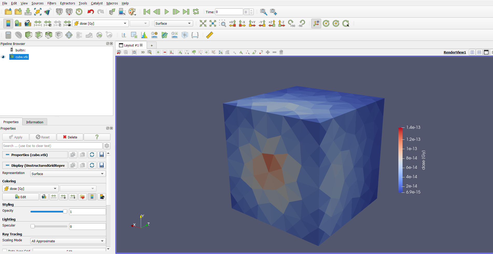

Run the simulation and view the results
To run the simulation, you'll use the mevegs EGSnrc user code, which outputs the results to a VTK file to be analyzed in Paraview.
As an
egs++geometry,EGS_Meshis technically usable from anyegs++application. ButmevegsconvertsEGS_Meshresults to VTK for quick analysis without any extra steps.
Back when you created the mesh file, you also assigned media names. In this example, the only media was H2O, but simulations can have many different media. For all mesh media, you have to ensure that EGSnrc has the corresponding data loaded. This can either be done by specifying a pegs4dat file using the -p flag on the command line, or defining the media in the input file. Either method is fine, but for this example you'll use a pegs4dat file. The file tutor_data.pegs4dat comes bundled with EGSnrc and has a definition of H2O.
Enter the mevegs directory in egs_home and run the simulation:
mevegs -i cube.egsinp -p tutor_data.pegs4dat
Make sure the cube.msh file is in the same directory you're running the code in.
EGSnrc will print a few screens of information to the console and then report simulation progress until it's done.
Running 1000000 histories
Batch CPU time Result Uncertainty(%)
==========================================================
1 2.30 0.00470093 2.36
2 4.82 0.00483381 1.67
3 6.94 0.00481503 1.36
4 9.03 0.00479555 1.18
5 11.21 0.0047708 1.06
6 13.44 0.00474837 0.96
7 15.91 0.00473835 0.89
8 17.97 0.00475373 0.83
9 20.32 0.00476651 0.79
10 22.21 0.00474332 0.75
Finished simulation
Total cpu time for this run: 22.21 (sec.) 0.0062(hours)
Histories per hour: 1.62089e+08
Number of random numbers used: 295050812
Number of electron CH steps: 1.43683e+07
Number of all electron steps: 2.24998e+07
last case = 2429137 Etot = 1e+07
================================================================================
Finished simulation
Elapsed time: 26.0 s ( 0.007 h)
CPU time: 25.7 s ( 0.007 h)
Ratio: 1.015
Afterwards, there should be a new file called cube.vtk. Start Paraview and open this file using File->Open, and Apply in the Properties toolbar. Color the mesh by dose to see the dose results.

And you're done! That's a full EGS_Mesh simulation from start to finish. Color the mesh by uncertainty to see whether these results can be trusted, or if you need to run more histories to be sure.
Going further
-
Refine the mesh and run another simulation. How did the simulation runtime change? Do the results look different? More refined meshes are required to observe accurate dose gradients.
-
After the simulation, the histories per hour is reported. Run a simulation with more histories and check if the histories per hour changes. Given this number, how long would it take you to run one billion histories?
-
Run an
EGS_XYZGeometrysimulation with a similar number of elements and compare the simulation runtimes. Typically,EGS_Meshsimulations are 2 to 3 times slower thanEGS_XYZGeometry. Do you observe this? How do the results compare? -
The dose result is fairly uneven, especially for coarse meshes like this one. Why? Does this persist if you keep refining the mesh?